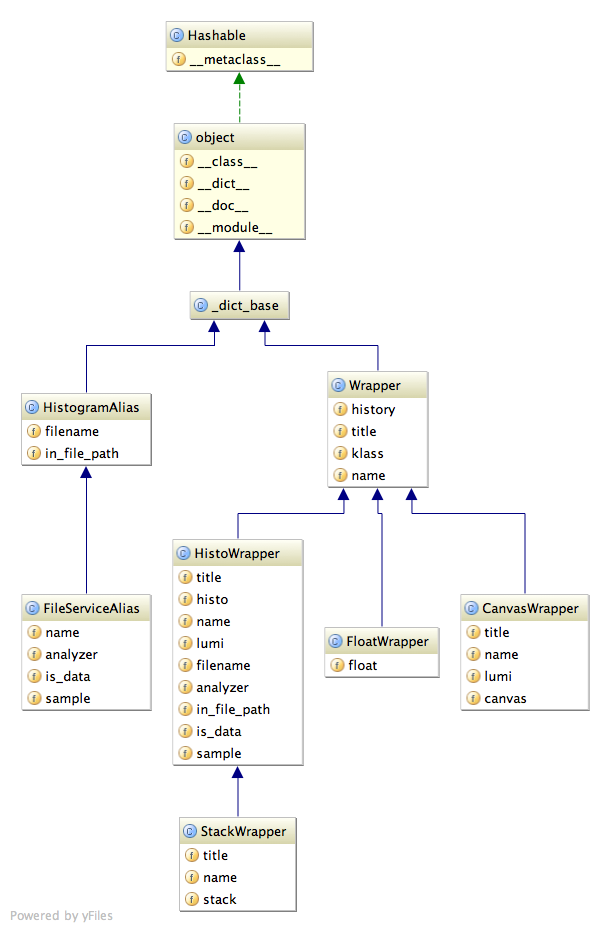

The image below shows the class diagram of the wrapper types, along with their fields. They are defined in histotools/wrappers.py . A HistoWrapper holds a ‘histo’, a FloatWrapper holds ‘float’ variable and so on.. The StackWrapper has a histo variable as well, which hold the sum of its component histograms.
The aliases on the left describe histograms, which are not loaded yet. They are created in the first place. After filtering and sorting these, the actual histogram is loaded for every alias. Don’t worry about _dict_base for now, as it only provides some common methods.
Bases: cmstoolsac3b.wrappers._dict_base
Alias of a histogram on disk.
| Parameters: |
|
|---|
Bases: cmstoolsac3b.wrappers.Alias
Alias of a histogram in the fileservice output.
| Parameters: |
|
|---|
Bases: cmstoolsac3b.wrappers._dict_base
Wrapper base class.
Keywords: name, title and history are accepted.
Example:
>>> w = Wrapper(name="n", title="t", history="h")
>>> info = w.all_info()
>>> info["name"]
'n'
Serializes Wrapper to python code dict.
Class is encoded as ‘klass’, history (see History for wrapper-types) is printed out nicely.
| Parameters: | info_filename – filename to store wrapper infos with suffix. |
|---|
Reads serialized dict and creates wrapper.
| Parameters: |
|
|---|---|
| Returns: | Wrapper type according to info file |
Bases: cmstoolsac3b.wrappers.Wrapper
Wrapper for float values.
Keywords: See superclass.
| Raises : | self.FalseObjectError |
|---|
Bases: cmstoolsac3b.wrappers.Wrapper
Wrapper class for a ROOT histogram TH1.
Keywords: lumi, is_data, sample, analyzer, and also see superclass.
| Raises : | self.FalseObjectError |
|---|
Bases: cmstoolsac3b.wrappers.HistoWrapper
Wrapper class for a ROOT histogram stack THStack.
Keywords: See superclass.
| Raises : | self.FalseObjectError |
|---|
Bases: cmstoolsac3b.wrappers.Wrapper
Wrapper class for a ROOT canvas TCanvas.
Keywords: lumi and also see superclass.
| Raises : | self.FalseObjectError |
|---|